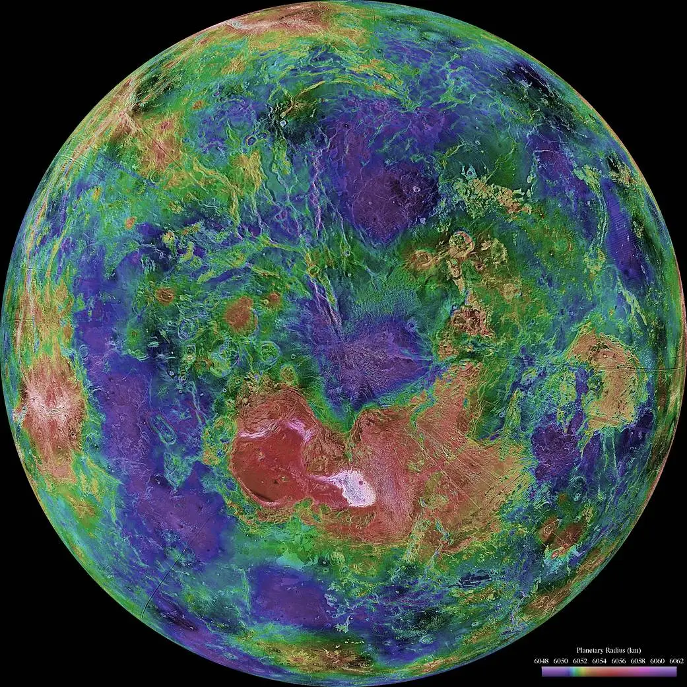

Venus

Overview
Venus is the second planet from the Sun and is nearly the same size as Earth, which is why it is sometimes called Earth's twin. Its thick atmosphere of carbon dioxide traps heat, making Venus the hottest planet in the solar system, even hotter than Mercury. Clouds of sulfuric acid hide its surface from view. Venus also spins backward compared to most planets, so the Sun rises in the west there.
Interesting Facts
- A day on Venus (243 Earth days) is longer than its year (225 Earth days).
- Surface temperatures reach about 900°F, hot enough to melt lead.
Quick Facts
- Type: Rocky Planet
- Distance from Earth: 23.7-162.2 million miles
- Size: 7,521 miles in diameter
- Discovery: Known since prehistoric times; Galileo observed its phases through a telescope in 1610.